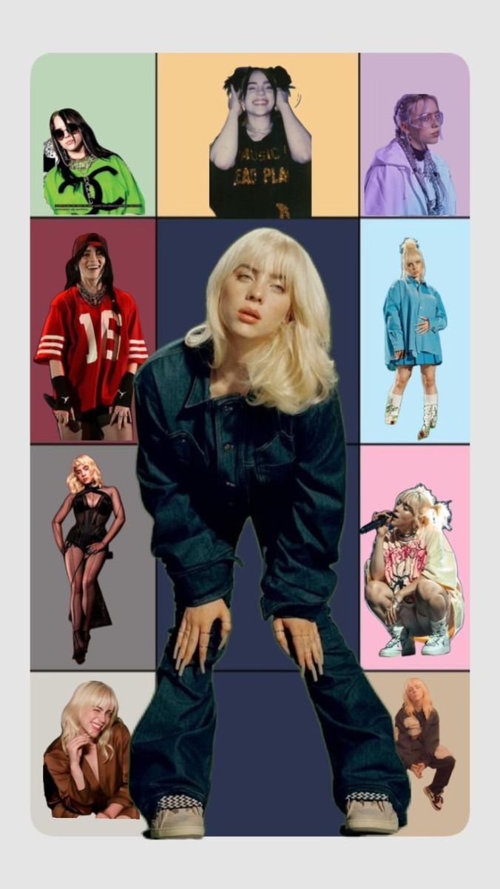
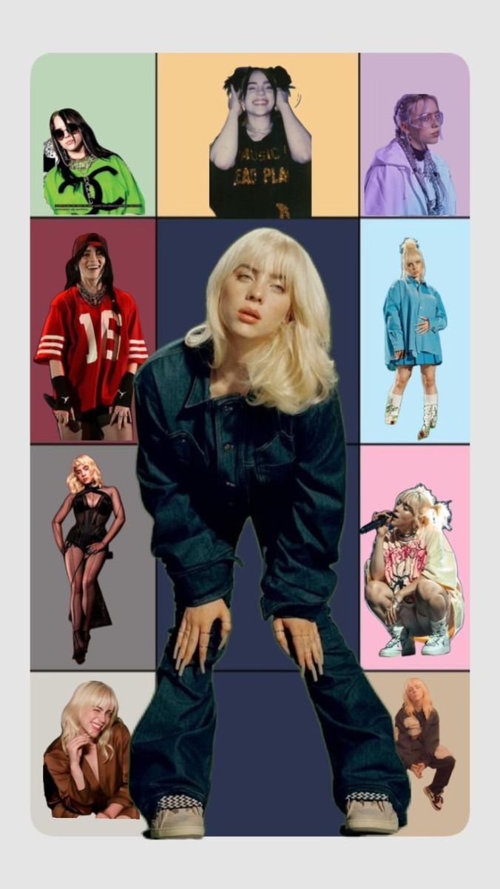
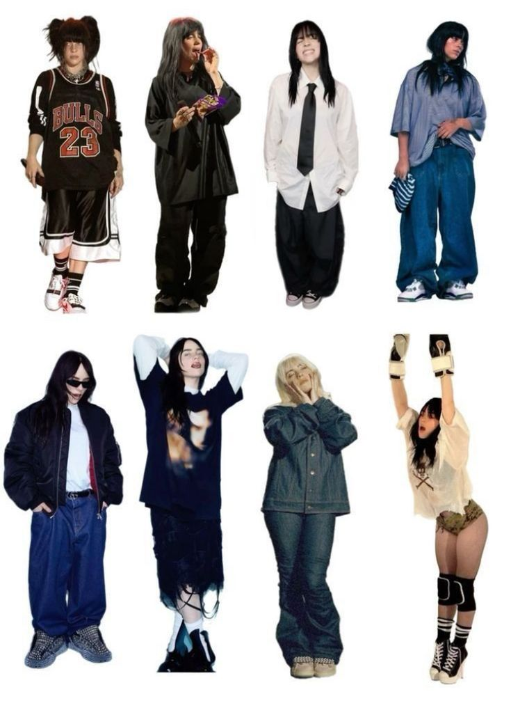
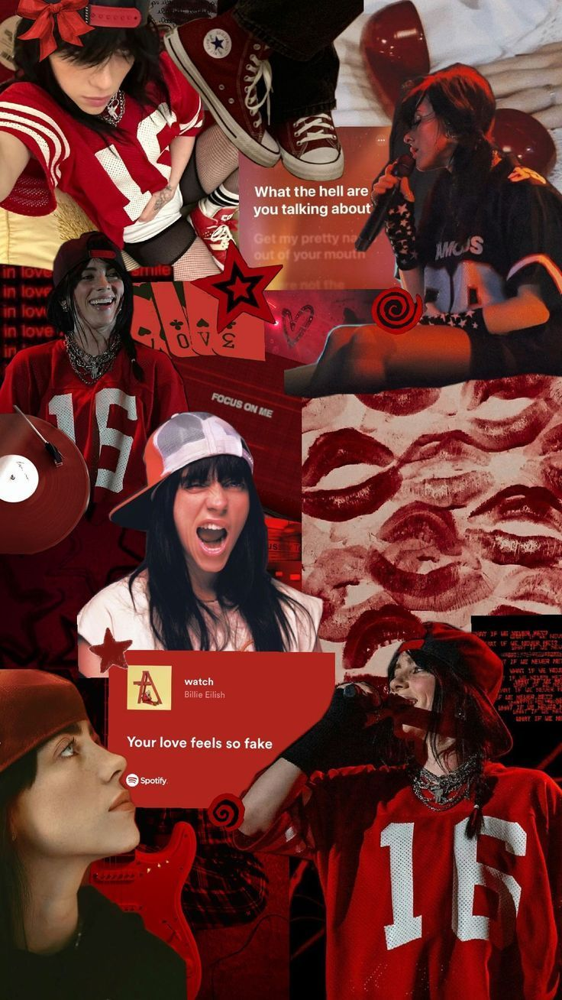

BOLETOS - CONCIERTOS BILLIE EILISH
 

¡¡THE BEST ESTYLIST!!
.png)
Billie Eilish ha sido reconocida por su estilo único y fuera de lo común. Con sus cambios de color de cabello, ropa holgada y zapatillas deportivas, la artista ha logrado crear un look que ha sido imitado por miles de personas en todo el mundo. El libro de fotografías 'By-Billie Eilish' ofrece una perspectiva diferente de la cantante a nivel visual, mostrándola como una persona con una familia y amigos cercanos en lugar de un simple icono pop. En cada una de estas se puede ver cómo desarrolla su estilo y autenticidad. También presenta a sus amigos y familiares, brindando una mirada completa a su vida desde antes de su nacimiento hasta su ascenso a la fama.
 A pesar de su corta edad, ha demostrado tener un gran sentido de la moda y de la estética. En cada una de sus presentaciones, la cantante sorprende con atuendos que combinan prendas deportivas con piezas de alta costura. La estética única de Eilish también ha sido objeto de atención de los medios, ya que su ropa holgada y amplia es una característica distintiva en sus presentaciones en vivo. Ha declarado que le gusta ser diferente y busca ser memorable en sus apariciones públicas. En 2019, expresó su deseo de no quedarse encasillada en una sola cosa y rechazó la imagen de "chica espeluznante, extraña y aterradora" que algunos han tratado de atribuirle.
Algo que llama la atención es su amor por la comodidad. La artista ha dejado claro en varias ocasiones que prefiere usar ropa holgada para sus presentaciones y en su día a día. Esta elección ha sido muy bien recibida por sus fans, quienes también buscan practicidad a la hora de vestir. En sus redes sociales acostumbra a mostrar sus atuendos con texturas, formas y capas que invitan a la desobediencia de lo "normal".
El estilo de Billie Eilish también ha sido reconocido por marcas de moda de renombre, creando colecciones que reflejan su estilo único y atrevido. Ha participado en importantes eventos de moda como la gala del 'Metropolitan Museum' de Nueva York (MET), que como se puede ver en la imagen, celebró la moda estadounidense. vestido se diseñó tomando como inspiración el famoso atuendo de tul que Marilyn Monroe lució en la ceremonia de los premios Óscar de 1951. Con un escote que deja los hombros al descubierto, un 'corset' y una falda voluminosa, el de la artista buscó recuperar el glamur del viejo Hollywood.
© 2025 Mi Sitio Web. Ric. Alvarado Todos los derechos reservados.